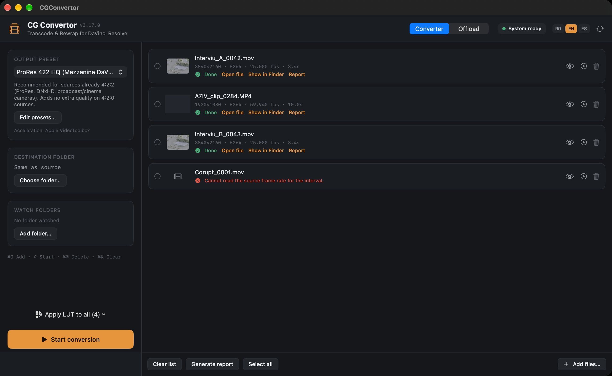
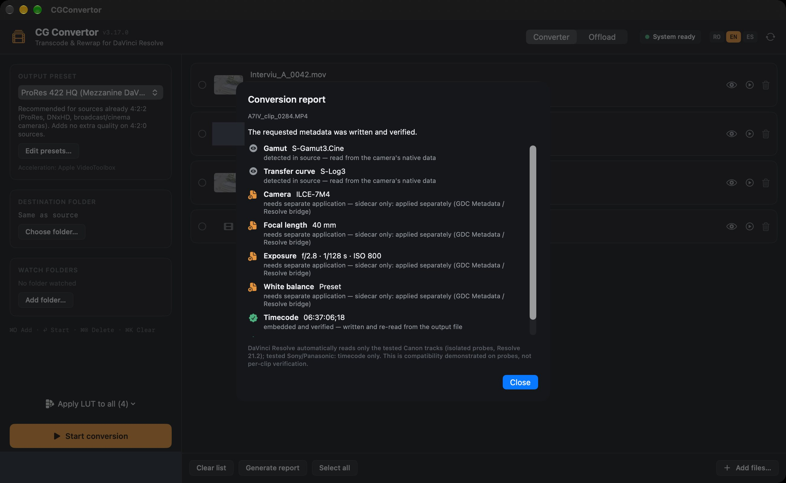
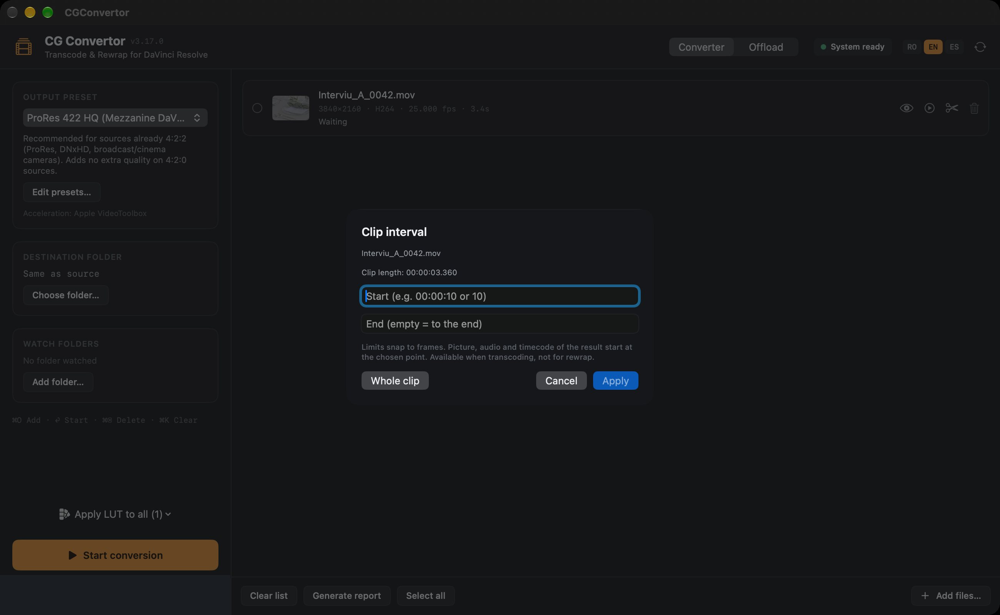

Transcode și rewrap, cu metadatele sursei la locul lor.
Convertești clipurile pentru DaVinci Resolve, iar timecode-ul și pistele native ale camerei rămân în fișier când imaginea rămâne Log. Fiecare clip are un raport: ce s-a păstrat, ce nu și de ce.
Vezi cum se obține→Ce demonstrăm și ce nu
Ce se păstrează, verificat în fișierul rezultat.
Aplicația scrie, apoi recitește independent. Nu declară Rec.709 doar pentru că o matrice e bt709 și nu presupune profilul din modelul camerei sau din numele fișierului.
Raport per clip, cu stări distincte
- Detectat în sursă — citit din date native, etichetă a producătorului sau dedus (se spune care).
- Încorporat și verificat — scris în fișier și recitit.
- Necesită aplicare separată — există doar în sidecar.
- Necunoscut sau nepăstrat — cu motivul.

Timecode
Inclusiv drop-frame la Sony, scris și recitit din rezultat.
Piste native
Canon „cndm”, Sony „rtmd”: copiate fără modificare, tăiate la cadrele convertite, verificate prin sumă de control. Doar cât timp imaginea rămâne Log, în MOV.
Sidecar
Un fișier „.gdc-metadata.json” lângă rezultat, pentru ce Resolve nu citește din fișier.
Extrage doar partea de care ai nevoie.
Alegi începutul și sfârșitul unui clip. Limitele se aliniază la cadre; imaginea, sunetul, timecode-ul și pistele native pornesc din punctul ales.
- Verificat pe Canon, Sony și Panasonic: număr exact de cadre, timecode, primul și ultimul cadru față de sursă.
- La transcodare. Rewrap-ul nu taie exact pe cadru și este refuzat cu un mesaj.

Compatibilitate demonstrată pe probe.
Rezultate din proiecte Resolve izolate (Resolve 21.2), pe camerele testate. Nu sunt valabile pentru toată marca și nu verifică fiecare clip.
| Cameră testată | Ce citește Resolve din fișierul convertit | Cum ajunge profilul în Resolve |
|---|---|---|
| Canon EOS C50 | Metadate informative și, în proiecte Color Managed v2, Input Color Space — automat. | Din pista nativă păstrată. |
| Sony A7 IV | Doar timecode. | Prin sidecar sau punte (aplicare separată). |
| Panasonic DC-S1 | Doar timecode. | Prin sidecar sau punte (aplicare separată). |
Ce nu face, spus direct.
Pistele native nu se păstrează
când alegi o etichetă de culoare, schimbi cadrele/s sau containerul nu e MOV. Raportul spune motivul.
Un fișier valid nu e automat complet
dacă scrierea metadatelor eșuează, clipul apare cu avertisment, nu ca succes complet.
Profilul Log nu e atribuit automat în Resolve la toate camerele
Verificat: Canon C50. La Sony A7 IV și Panasonic DC-S1 Resolve citește doar timecode-ul; celelalte mărci nu au fost testate. Alegi profilul manual în Resolve; CGConvertor nu schimbă imaginea și nu etichetează Log drept Rec.709.
Decodare hardware oprită
pe un clip Panasonic H.264 4:2:2 rezultatul a diferit de decodarea software; rămâne dezactivată.
Originalele nu sunt modificate. ExifTool este opțional și neinclus; fără el, câmpurile necitite apar ca „necunoscut”.
Probă de 5 zile, apoi licență.
Probă
5 zile de acces complet de la prima pornire. Probele deja începute își păstrează durata inițială.
Licență
3, 6 sau 12 luni, sau perpetuă, legată de calculatorul tău. Aplicația nu folosește donații. Condițiile se comunică pe canalul de contact.
Cerințe
macOS pe Mac (aplicație semnată Developer ID și notarizată). Versiunea Windows este separată și nu s-a schimbat în 3.17.0.